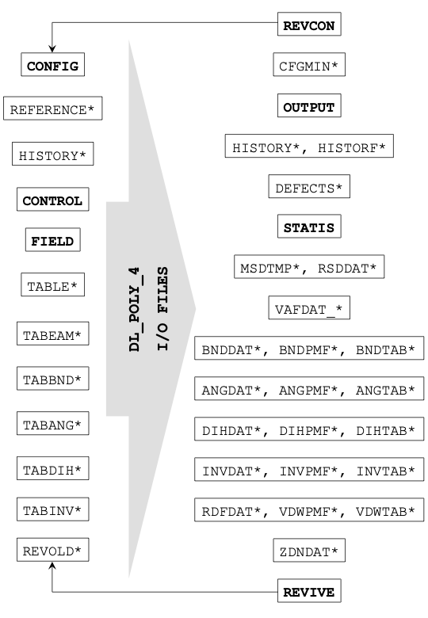

DL_POLY files¶
DL_POLY makes use of various input files to describe the simulation, including its initial state and interactions between particles, and creates output files indicating how the system has evolved over time. A summary description of the files, what they do and how they can be used are given in the diagram below.
{kind=link}
It should be noted that not all the input files shown here are required for a DL_POLY simulation run, while some files are specific for DL_POLY_5/DL_POLY_5 and others are available (but not shown here) for more advanced capabilities in DL_POLY Classic.
The internal units used by DL_POLY include:
- Mass: dalton (Da), equivalent to \(\tfrac{1}{12}\) of the mass of a carbon-12 atom
- Charge: charge on a proton, \(e\)
- Length: angstroms (Å, \(10^{-10}\) m)
- Time: picoseconds (ps, \(10^{-12}\) s)
- Force: dalton-angstroms per squared picoseconds (Da Å ps\(^{-2}\))
- Energy: dalton-squared angstroms per squared picoseconds (Da Å\(^{2}\) ps\(^{-2}\)), equal to 10 J mol\(^{-1}\)
while temperatures are expressed in kelvin (K), pressures in kilo-atmospheres and angles in degrees. It is possible to use the following energy units to specify interaction potentials:
- Internal DL_POLY units (10 J mol\(^{-1}\))
- Electron-volts (eV)
- Kilocalories per mole (kcal mol\(^{-1}\))
- Kilojoules per mole (kJ mol\(^{-1}\))
- Kelvin or joules divided by the Boltzmann constant (K or J \(k_B^{-1}\))
- DPD units (see below)
provided that all files specifying interactions for a given simulation (FIELD, TABLE, TABEAM, TABBND etc.) use the same units.
If DPD units are in use, each quantity is set in terms of three fundamental units:
- Mass (dpd_m)
- Length (dpd_l)
- Energy (dpd_e)
which are fictiously set equal to DL_POLY’s internal units (daltons, angstroms and 10 J mol\(^{-1}\)) for calculations. Most of the other units are left unchanged as these can be derived consistently from the three fundamental units, although the DPD temperature unit (dpd_temp) is equivalent to \(1/k_B\) K and the DPD pressure unit (dpd_p) is set to DL_POLY’s internal pressure unit (~0.1639 katms). The io_units_scheme dpd should be included in the CONTROL file so DL_POLY can report temperatures and pressures correctly. (Refer to the DL_POLY User Manual for more details.)

CONTROL
This mandatory file specifies the simulation controls, including the required system temperature, cutoff distances, timestep size, how long the simulation needs to run etc.
With the exception of the first line to give a description of the simulation, the CONTROL file consists of keywords that are used to specify particular options and/or values. Two forms of CONTROL file can be used in DL_POLY. The original format (up to and including version 4.10) takes the form of:
keyword [options] {data}
where multiple options and data values can be provided in each line, while the new format (available from version 4.11 onwards) uses the form:
keyword value [unit]
where only a single value can be supplied per line and each non-dimensional value must be followed with a unit.
The following example is a CONTROL file for one of DL_POLY’s test cases, first in the original format:
SODIUM CHLORIDE WITH (27000 IONS)
restart scale
temperature 500.0
equilibration steps 20
steps 20
timestep 0.001
cutoff 12.0
rvdw 12.0
ewald precision 1d-6
ensemble nvt hoover 0.01
print every 2
stats every 2
collect
job time 100
close time 10
finish
and then in the new format:
SODIUM CHLORIDE WITH (27000 IONS)
temperature 500.0 K
time_equilibration 20 steps
time_run 20 steps
timestep 0.001 ps
cutoff 12.0 ang
vdw_cutoff 12.0 ang
coul_method ewald
ewald_precision 1e-6
ensemble nvt
ensemble_method hoover
ensemble_thermostat_coupling 0.01 ps
print_frequency 2 steps
stats_frequency 2 steps
record_equilibration
time_job 100 s
time_close 10 s
A full list of the available keywords in CONTROL and the values they take can be found in the relevant section of DL_POLY’s documentation or Chapter 10 of The DL_POLY User Manual.
More recent versions of DL_POLY (including DL_POLY_5) can read CONTROL files in both formats: a guide to convert original format CONTROL files to the new format can be found in the DL_POLY Documentation or Chapter 9 of The DL_POLY User Manual, while a script to carry out the conversion automatically (old2new) is available as part of the dlpoly-py Python module.
CONFIG (REVCON, CFGMIN)
The mandatory CONFIG file is used by DL_POLY to supply the initial configuration for a simulation with the particle coordinates at the very least.
After the first line giving a description for the simulation, the following line provides (at least) a CONFIG file key indicating the amount of data supplied per particle, a periodic boundary key to identify the shape of the simulation box and (optionally) the total number of particles. Further values may be supplied depending on the version of DL_POLY in use and/or how it was originally created. If periodic boundaries are in use, three more lines specifying the Cartesian components of the super-cell vectors (in angstroms or DPD length units) are supplied.
Each particle is then identified by name (for its atomic type) and numerical index, before its data are supplied as triples for Cartesian components from the following line. At least one data line to specify the particle’s position - given as coordinates in angstroms (Å) or DPD length units (dpd_l) - is required. This can be followed by a line with the particle’s velocity in angstroms per picosecond (Å ps\(^{-1}\)) or DPD velocity units (dpd_v = dpd_l / dpd_t) and another line with the particle’s force in angstrom-daltons per squared picosecond (Å Da ps\(^{-2}\)) or DPD force units (dpd_f = dpd_e / dpd_l), depending on the value of the CONFIG file key.
The following example is the beginning of a CONFIG file for one of DL_POLY’s test cases.
SODIUM CHLORIDE WITH EWALD SUM (27000 IONS)
2 2 27000 0 1.0000000E-03 0.0000000E+00
98.7812800000 0.0000000000 0.0000000000
0.0000000000 98.7812800000 0.0000000000
0.0000000000 0.0000000000 98.7812800000
Na+ 1
-36.43905160 -19.85128560 -36.60268540
-11.51506468 0.5162949371 -6.734152847
-13462.78230 -457.1093153 -1716.728855
Na+ 2
-16.68279560 -19.85128560 -36.60268540
8.298449274 1.295415855 3.669430634
-13463.67185 -457.2166341 -1716.692273
Na+ 3
3.073460400 -19.85128560 -36.60268540
-1.696209900 1.841064273 8.155953033
-13464.54412 -457.2303447 -1716.666553
Na+ 4
22.82971640 -19.85128560 -36.60268540
7.425443946 1.735720321 4.534235308
-13464.19529 -457.1313636 -1716.687133
Na+ 5
42.58597240 -19.85128560 -36.60268540
-3.394333048 -6.654931163 7.666678945
-13463.10693 -457.0566506 -1716.725882
Na+ 6
-36.43905160 -0.9502960000E-01 -36.60268540
1.522568701 1.480100090 -5.961439769
-13462.61340 -457.6170577 -1716.800409
Na+ 7
-16.68279560 -0.9502960000E-01 -36.60268540
5.811867434 0.6440350593 -1.099610527
-13463.50306 -457.7243811 -1716.763827
A file in the same format is written by DL_POLY to provide a configuration for simulation restart (REVCON), which needs to be renamed to CONFIG before restarting. If the user selects an energy minimisation option, a CFGMIN file in the same format (but only ever containing particle positions) is created with the minimised configuration.
Given its size even for small systems, we strongly recommend either using a GUI (e.g. the DL_POLY Java GUI or Aten) to create a CONFIG file for a new simulation, or DL_FIELD to generate one from a existing structure file (e.g. PDB, xyz or mol2). The file can be opened either in VMD or in OVITO to visualise its contents.
FIELD
This mandatory file specifies the force field for the simulation to define the nature of molecular forces, including the topology of the system that must match its crystallographic description in the CONFIG file.
Apart from the first line providing a description of the simulation and a line indicating the units in use, the FIELD file consists of blocks of information, each starting with a keyword on its first line. These blocks include details of molecules in the system (including population, topology and interactions for bonds, angles etc.), non-bonded interactions (e.g. van der Waals, Tersoff) and any applied external fields (e.g. electric fields, gravity).
The following example is a FIELD file for one of DL_POLY’s test cases (the same case as for the CONTROL file above):
SODIUM CHLORIDE WITH EWALD SUM (27000 IONS)
units internal
molecular types 1
SODIUM CHLORIDE
nummols 27
atoms 1000
Na+ 22.9898 1.0 500
Cl- 35.453 -1.0 500
finish
vdw 3
Na+ Na+ bhm 2544.35 3.1545 2.3400 1.0117e+4 4.8177e+3
Na+ Cl- bhm 2035.48 3.1545 2.7550 6.7448e+4 8.3708e+4
Cl- Cl- bhm 1526.61 3.1545 3.1700 6.9857e+5 1.4032e+6
close
The keywords and definitions in the FIELD file are given in further detail in the DL_POLY Documentation or Chapter 10 of The DL_POLY User Manual. The file can be created by hand in a text editor if the system is small, although for larger systems it is highly recommended to either use a GUI (e.g. the DL_POLY Java GUI or Aten) to create one for a new system or to use DL_FIELD to generate one from a existing structure file (e.g. PDB, xyz or mol2). The nfold option in DL_POLY (specified in the CONTROL file) can also be used to duplicate a smaller system and produce FIELD and CONFIG files for the expanded simulation.
TABLE
This file can be used to define (van der Waals) pair potentials in tabular form. It can be used to specify force fields that cannot be expressed analytically.
After the first line giving a description of the simulation, the second line gives the mesh resolution (spacing between data points, \(\Delta r\)) and the maximum cutoff distance for tabulated potentials, both given in angstroms (Å) or DPD length units (dpd_l), as well as the number of grid points per potential.
Each tabulated potential starts with a line stating the two atom types (and optionally long-range corrections for potentials and virials beyond the cutoff distance), before two blocks of tabulated data with up to four values per line are supplied. The first data block gives the pairwise potential \(U \left( r \right)\), while the second gives a virial function:
which is used to calculate pairwise forces.
The following example is the beginning of a TABLE file for one of DL_POLY’s test cases:
table for NaCl interactions
0.0030024019 15.0000000000 5000
Na+ Na+ -0.0123358025 0.0740148148
-1.705098460381e+17 -2.664216344342e+15 -2.338955363998e+14 -4.162838037678e+13
-1.091263014286e+13 -3.654617752761e+12 -1.449309774210e+12 -6.504434399815e+11
-3.208443537839e+11 -1.705098426549e+11 -9.624835956154e+10 -5.710339913614e+10
-3.532558057780e+10 -2.264546204605e+10 -1.496931113616e+10 -1.016317564677e+10
-7.064082166219e+09 -5.013189996306e+09 -3.624327973877e+09 -2.664213329655e+09
-1.988076276004e+09 -1.503877724465e+09 -1.151811334982e+09 -8.922377844004e+08
-6.984054836264e+08 -5.519594344833e+08 -4.401129354832e+08 -3.538326459912e+08
-2.866535719532e+08 -2.338928501345e+08 -1.921203178710e+08 -1.587970438002e+08
-1.320253377503e+08 -1.103737674635e+08 -9.275329004437e+07 -7.832863524690e+07
-6.645427502318e+07 -5.662772275710e+07 -4.845516961488e+07 -4.162598675454e+07
-3.589365576157e+07 -3.106139933704e+07 -2.697127634707e+07 -2.349584977641e+07
-2.053177937520e+07 -1.799486403761e+07 -1.581618334625e+07 -1.393907772399e+07
-1.231677224109e+07 -1.091049728302e+07 -9.687994870946e+06 -8.622325894611e+06
-7.690913323753e+06 -6.874771373824e+06 -6.157881889172e+06 -5.526687798470e+06
-4.969680071363e+06 -4.477059661105e+06 -4.040459824981e+06 -3.652717247775e+06
-3.307682759321e+06 -3.000064290393e+06 -2.725296168867e+06 -2.479430009423e+06
-2.259043362951e+06 -2.061163018405e+06 -1.883200430284e+06 -1.722897210274e+06
-1.578278995907e+06 -1.447616311250e+06 -1.329391279330e+06 -1.222269244712e+06
-1.125074526633e+06 -1.036769655403e+06 -9.564375532538e+05 -8.832662099691e+05
-8.165354770557e+05 -7.556056649511e+05 -6.999076780137e+05 -6.489344638126e+05
-6.022335879943e+05 -5.594007750104e+05 -5.200742792558e+05 -4.839299715052e+05
-4.506770426244e+05 -4.200542409200e+05 -3.918265716306e+05 -3.657823973237e+05
-3.417308866578e+05 -3.194997663462e+05 -2.989333374351e+05 -2.798907223539e+05
-2.622443137586e+05 -2.458784000900e+05 -2.306879461114e+05 -2.165775095548e+05
-2.034602774715e+05 -1.912572080015e+05 -1.798962651047e+05 -1.693117353785e+05
-1.594436174470e+05 -1.502370755952e+05 -1.416419503424e+05 -1.336123195439e+05
-1.261061043820e+05 -1.190847152858e+05 -1.125127334038e+05 -1.063576237728e+05
-1.005894767713e+05 -9.518077484241e+04 -9.010618181667e+04 -8.534235246569e+04
The tabulated potential for an atom pair is activated by using tab as the van der Waals interaction type in the FIELD file.
TABEAM
This file can be used to define embedded atom model (EAM) potentials that cannot be expressed analytically. It uses a similar format to the TABLE file for specifying tabulated properties.
To define the EAM potential, several tabulated functions per atom pair or atom type for the pair potential and embedding functions (functions of bulk densities), as well as tabulated functions of pairwise distances used to calculate bulk densities, need to be included in the TABEAM file. These are indicated with pair, embed and dens keywords (and similar words for other EAM variants), before each function follows with four values per line. Unlike the TABLE file, no forces for the pair potential need to be supplied. The \(G \left( r \right)\) (virial) values are determined from the potential itself using five-point interpolation.
Further details for the file format are given in the DL_POLY Documentation or Chapter 10 of The DL_POLY User Manual. The tabulated EAM potential for an atom pair is activated by using eam, eeam, 2bea or 2bee as the metal potential type in the FIELD file.
REVIVE (REVOLD)
This unformatted (binary) file provides the restart capability for DL_POLY and is written periodically during the simulation. It contains accumulators for thermodynamic data, data for calculating radial distribution functions (RDFs) and mean squared displacements (MSDs), as well as other simulation checkpoint data.
To use a REVIVE file to restart a DL_POLY calculation, it needs to be renamed as REVOLD.
OUTPUT
This mandatory output file provides a summary of the DL_POLY simulation. It is formatted to be human-readable and contains:
- A summary of the input data (supplied in input files)
- Instantaneous thermodynamic data at selected intervals
- Rolling average values of thermodynamic data
- Statistical averages of thermodynamic data (at end of run)
- A sample of the final configuration
- Radial distribution data (if requested in the CONTROL file)
- Estimated mean square displacements (MSDs) and a resulting three-dimensional diffusion coefficient
It also includes timing data for the simulation to assess the computational performance of DL_POLY, iteration data for Conjugate Gradients Method (CGM) minimisation and/or the relaxed shell model (if required), and any warnings or error reports for the simulation.
STATIS
This optionally-produced output file gives system properties at intervals selected by the user.
After the first two lines providing the simulation name and specifying the energy units in use, each set of statistical data for the system is supplied as a block of values in five columns preceded by a line indicating the corresponding timestep number, the time given in picoseconds (ps) or DPD time units (dpd_t) and the number of values supplied. The number of values provided can vary depending on the simulation being carried out.
The following example is the STATIS file created during one of DL_POLY’s test cases:
IRON WITH TABULATED EAM POTENTIAL, TTM AND CASCADE
ENERGY UNITS = electron Volts
0 0.000000E+00 38
-3.858045E+05 3.009300E+02 -3.879050E+05 -3.879050E+05 0.000000E+00
0.000000E+00 0.000000E+00 0.000000E+00 0.000000E+00 -3.857929E+05
0.000000E+00 4.166308E+03 4.166308E+03 0.000000E+00 0.000000E+00
0.000000E+00 0.000000E+00 0.000000E+00 5.727347E+05 0.000000E+00
0.000000E+00 0.000000E+00 9.000000E+01 9.000000E+01 9.000000E+01
0.000000E+00 3.195644E-02 0.000000E+00 0.000000E+00 3.561731E-02
3.054490E-02 -1.534133E-02 3.054490E-02 2.329237E-02 2.818608E-02
-1.534133E-02 2.818608E-02 3.695963E-02
10 5.000000E-04 38
-3.754378E+05 1.783964E+03 -3.878900E+05 -3.878900E+05 0.000000E+00
0.000000E+00 0.000000E+00 0.000000E+00 0.000000E+00 -3.684662E+05
0.000000E+00 3.989579E+03 3.989579E+03 0.000000E+00 0.000000E+00
0.000000E+00 0.000000E+00 0.000000E+00 5.727347E+05 0.000000E+00
0.000000E+00 0.000000E+00 9.000000E+01 9.000000E+01 9.000000E+01
0.000000E+00 1.924749E+01 0.000000E+00 1.719024E-05 1.927140E+01
2.303356E+01 2.299944E+01 2.303356E+01 1.924698E+01 2.304046E+01
2.299944E+01 2.304046E+01 1.922407E+01
20 1.000000E-03 38
-3.754520E+05 1.632019E+03 -3.868436E+05 -3.868436E+05 0.000000E+00
0.000000E+00 0.000000E+00 0.000000E+00 0.000000E+00 -3.674721E+05
0.000000E+00 -1.156409E+03 -1.156409E+03 0.000000E+00 0.000000E+00
0.000000E+00 0.000000E+00 0.000000E+00 5.727347E+05 0.000000E+00
0.000000E+00 0.000000E+00 9.000000E+01 9.000000E+01 9.000000E+01
0.000000E+00 2.203115E+01 0.000000E+00 7.241597E-05 2.209781E+01
2.327899E+01 2.428559E+01 2.327899E+01 2.110695E+01 2.347711E+01
2.428559E+01 2.347711E+01 2.288871E+01
30 1.500000E-03 38
-3.752463E+05 1.643428E+03 -3.867175E+05 -3.867175E+05 0.000000E+00
0.000000E+00 0.000000E+00 0.000000E+00 0.000000E+00 -3.669388E+05
0.000000E+00 -1.979957E+03 -1.979957E+03 0.000000E+00 0.000000E+00
0.000000E+00 0.000000E+00 0.000000E+00 5.727347E+05 0.000000E+00
0.000000E+00 0.000000E+00 9.000000E+01 9.000000E+01 9.000000E+01
0.000000E+00 2.293562E+01 0.000000E+00 1.337852E-04 2.011109E+01
1.258819E+01 2.686363E+01 1.258819E+01 1.390848E+01 1.093381E+01
2.686363E+01 1.093381E+01 3.478731E+01
The intended uses of this file are to carry out statistical analysis, e.g. to determine errors in the calculated properties, and to plot the values as functions of time. Either the DL_POLY Java GUI or scripts in the dlpoly-py Python module can be used to extract, manipulate and plot data from this file.
HISTORY (HISTORF)
This optionally-produced output file provides configuration data at user-selected intervals as a simulation trajectory. It is formatted similarly to the CONFIG file but modified to enable a sequence of multiple configurations to be supplied in the same file.
The HISTORY file starts with a simulation name in the first line, followed by a line specifying the data level (indicating the amount of data provided per particle), the periodic boundary key and the total number of particles (which should remain constant throughout the simulation).
Each configuration starts with a header, whose first line includes the keyword timestep, the timestep number for the configuration frame, the total number of particles, the data level, periodic boundary key and the simulation time in picoseconds (ps) or DPD time units (dpd_t). It is then followed by three lines providing the Cartesian components of the super-cell vectors (in angstroms or DPD length units). The data for all particles then follow: the name, index, mass and charge are supplied for each particle, before at least the coordinates for its position in angstroms (Å) or DPD length units (dpd_l). If more data per particle are requested, the particle velocity in angstroms per picosecond (Å ps\(^{-1}\)) or DPD velocity units (dpd_v) and the force acting on the particle in angstrom-daltons per squared picosecond (Å Da ps\(^{-2}\)) or DPD force units (dpd_f) are supplied as additional lines.
The following example is the beginning of a HISTORY file created during one of DL_POLY’s test cases:
DL_POLY TEST CASE 10: DNA Strand in SPC Water
2 7 3378
timestep 1 3378 2 7 0.001000
52.00 0.000 0.000
0.000 30.02 0.000
0.000 0.000 64.34
P_3 1 30.973800 1.165900
-8.6522E+00 4.6430E+00 -3.1314E+01
3.8840E+00 7.9765E-01 -2.1608E+00
-9.8599E+02 1.1857E+03 1.9631E+03
O_2 2 15.999400 -0.776100
-9.8537E+00 3.8644E+00 -3.1469E+01
3.1055E+00 2.7294E+00 -5.9096E+00
-1.3153E+03 2.2118E+03 1.2624E+02
O_2 3 15.999400 -0.776100
-8.1115E+00 3.6735E+00 3.2111E+01
4.3244E+00 1.7421E+00 -2.9006E+00
1.5923E+03 1.6067E+03 1.2143E+03
O_3 4 15.999400 -0.495400
-8.4095E+00 3.7741E+00 -3.0066E+01
-3.7534E+00 1.5520E+00 -1.2485E-01
1.6786E+03 7.2103E+02 2.4525E+02
C_3 5 12.011000 -0.006900
-8.2889E+00 4.2697E+00 -2.8741E+01
-3.2596E+00 1.1117E+00 -4.9447E-03
-3.9063E+02 2.3338E+02 4.4700E+02
H_ 6 1.008000 0.075400
-7.9345E+00 3.3762E+00 -2.8227E+01
9.5048E+00 1.0488E+01 7.7937E+00
-2.4981E+03 -4.9711E+02 4.6945E+02
H_ 7 1.008000 0.075400
-9.2952E+00 4.5264E+00 -2.8410E+01
-6.0025E+00 6.4848E+00 -1.2228E+01
3.5275E+02 -1.2279E+03 1.8052E+03
The HISTORY file can be opened either in VMD or in OVITO to visualise the trajectory resulting from the DL_POLY simulation and carry out analyses.

The HISTORY file can be used to replay a DL_POLY simulation and recover additional observables. If a new HISTORY file is to be generated in the process (e.g. if changes are made to interactions in the FIELD file), the previous HISTORY file should be renamed HISTORF.
RDFDAT (ZDNDAT)
The optionally-produced RDFDAT file supplies the radial distribution functions (RDFs) for all pairs of particle types, determined while calculating pair forces during the DL_POLY run.
After a header consisting of two lines - one for the simulation title and the other giving the numbers of plots and data values per plot - each RDF follows in tabulated form, with two columns for the radius (in angstroms or DPD length units) and the radial distribution function itself, and preceded by the names of the particle types in the pair.
The following example is the beginning of a RDFDAT file created during one of DL_POLY’s test cases:
Silver Iodide Alpha Phase
3 160
Ag+ Ag+
2.375000E+00 1.932754E-03
2.425000E+00 7.415510E-03
2.475000E+00 7.118930E-03
2.525000E+00 1.196964E-02
2.575000E+00 1.315351E-02
2.625000E+00 1.582152E-02
2.675000E+00 3.199477E-02
2.725000E+00 3.964044E-02
2.775000E+00 5.662942E-02
2.825000E+00 7.786575E-02
2.875000E+00 1.002413E-01
2.925000E+00 1.197803E-01
2.975000E+00 2.020131E-01
A similar format is used by ZDNDAT, substituting the radius and RDF with the distance in the \(z\)-direction and the Z-density (particle density at the given height \(z\)) for each particle species.
Other additional files
Some other output files that can be written by DL_POLY include:
REFERENCE
Provides a reference structure to compare against the current configuration when detecting crystalline defects (similarly formatted to CONFIG)
DEFECTS
A trajectory file providing a list of atoms identified as interstitials and vacancies (compared to either the REFERENCE or CONFIG file) and their locations at user-specified intervals
MSDTMP
A dump file providing the square roots of mean squared displacements (MSDs) in angstroms (Å) or DPD length units (dpd_l) and mean temperatures in kelvin (K) or DPD temperatures (dpd_temp) for all particles at user-specified intervals
RSDDAT
A dump file providing the displacements in angstroms (Å) or DPD length units (dpd_l) for all particles from their initial positions at user-specified intervals
TABBND, TABANG, TABDIH, TABINV
Files with tabulated potentials for intramolecular interactions (bonds, angles, dihedrals, inversions)
These and other files are described in more detail in the DL_POLY Documentation and Chapter 10 of The DL_POLY User Manual.